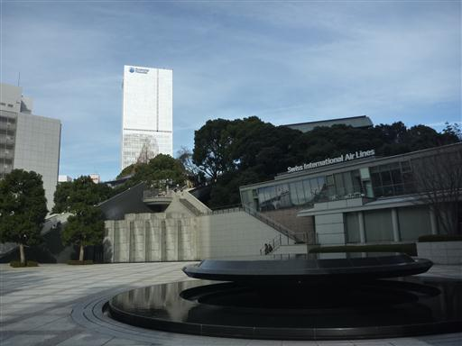
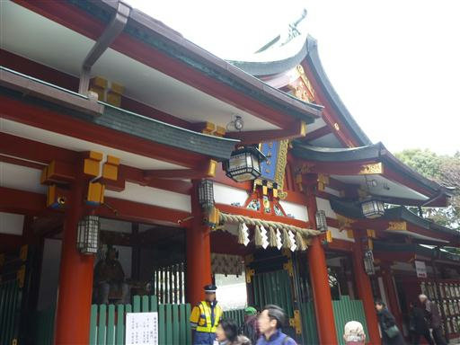
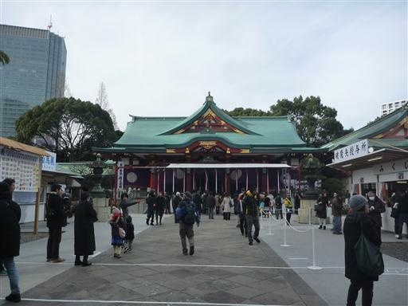
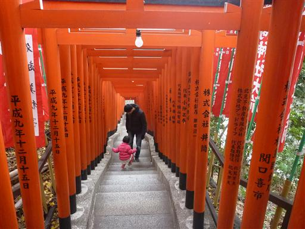
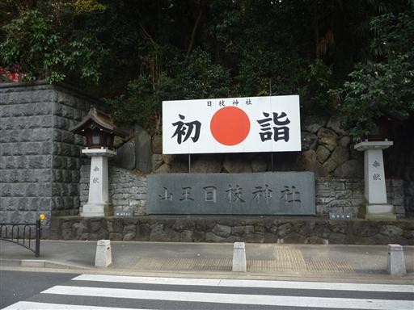
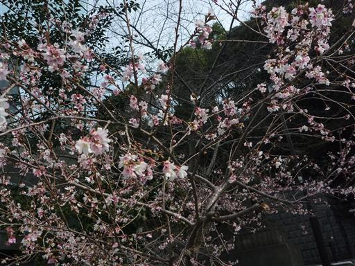
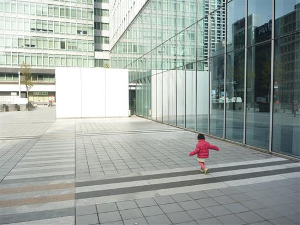
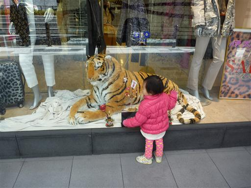

日枝神社
| 日付 | 2013年1月6日（日） |
|---|---|
| メンバー | 家族（妻、長女・1歳） |
| アクセス | 電車 |
正月は長女と実家に帰っていたので、
家に戻ってから家族3人で改めて初詣に行く。
行先は日枝神社。東京の真中にある神社だ。
高層ビルの間に日枝神社の森が見えてきた。
少し高台にある日枝神社までエスカレーターが設置されている。

立派な神門をくぐって中に入る。

正面に見えるのが本殿。多くの参拝客を捌くために、この時期は鈴がたくさんつけられている。
それなりに参拝者は多いが、大混雑というほどではない。

稲荷参道を通って帰る。こちらの道は、赤い鳥居がたくさん並んでいる。

こちらの入口も立派だ。側には大鳥居が立っている。

冬なのに桜の花が咲いている。冬桜が植えられているのだろうか？

休日の都心部は案外人通りが少ない。

ショーウィンドウに展示されている虎に惹かれている。
この後、ストックホルムというスウェーデン料理のレストランに寄ってから帰宅する。
